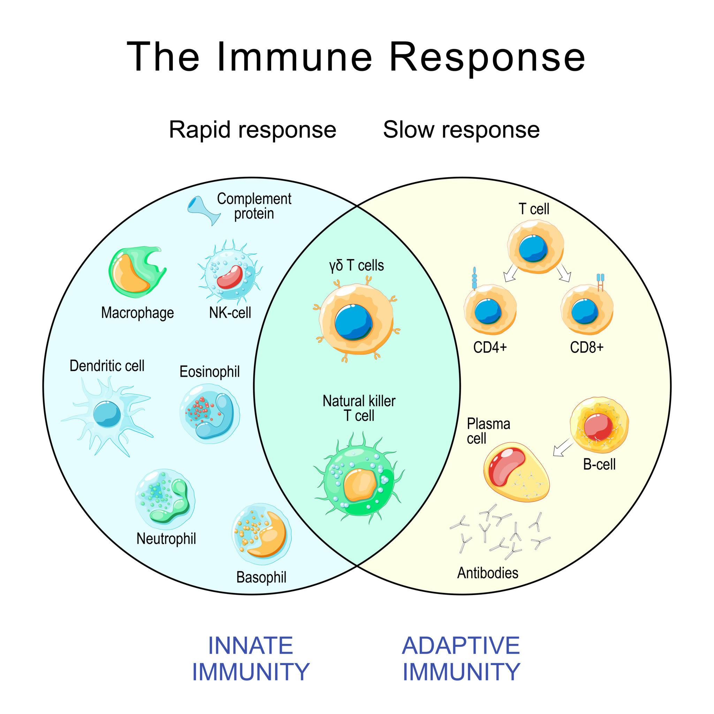
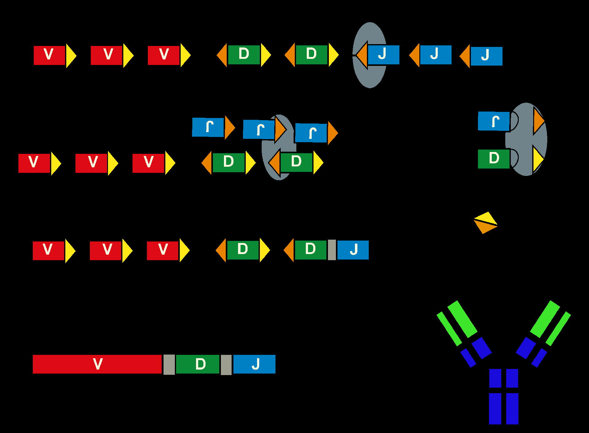
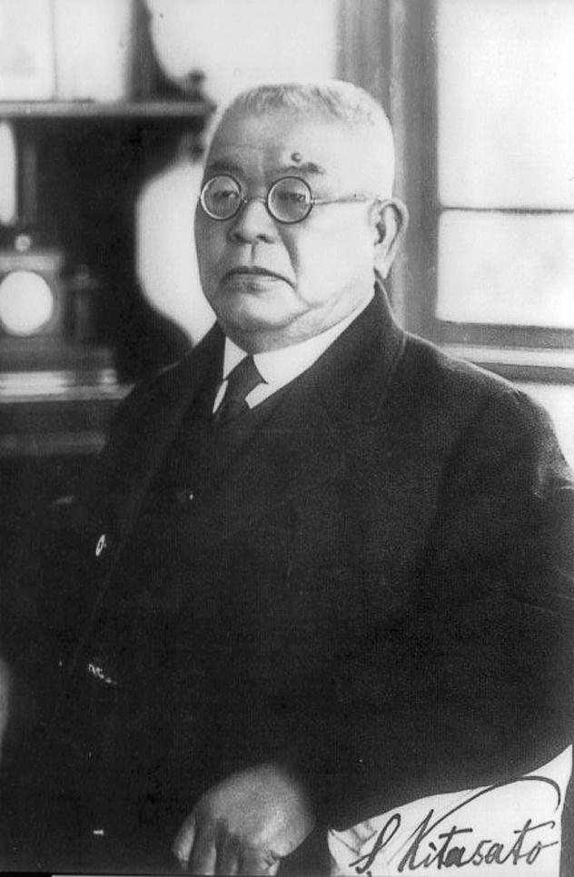
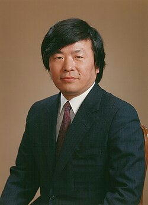
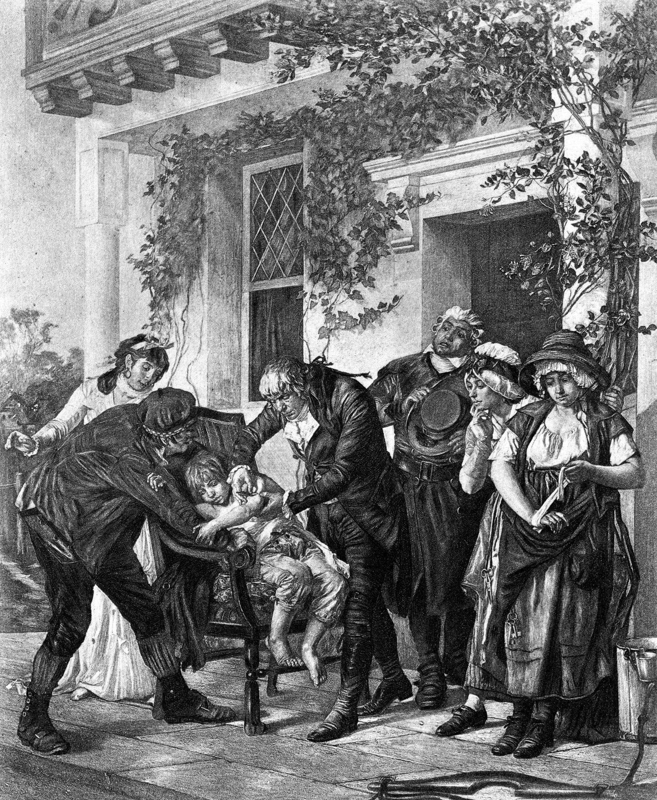
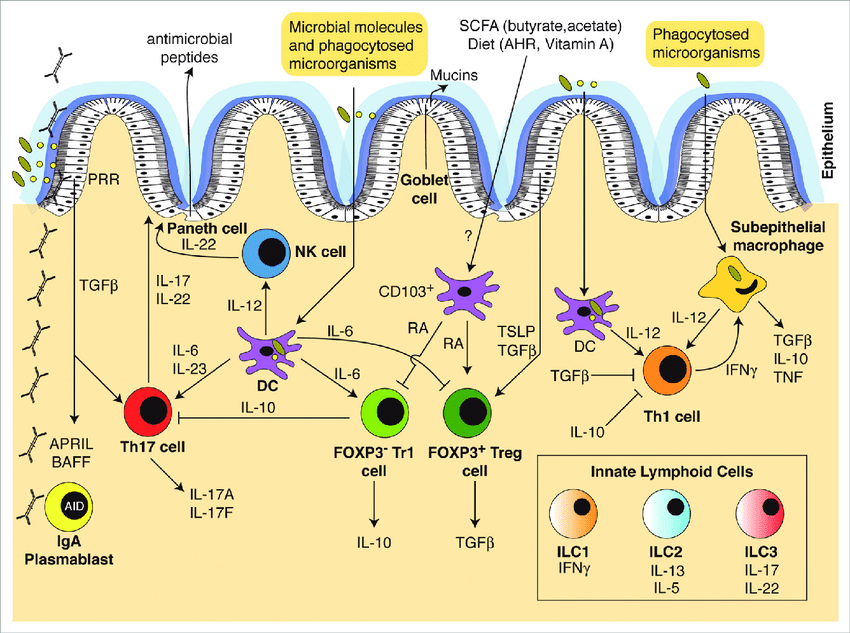
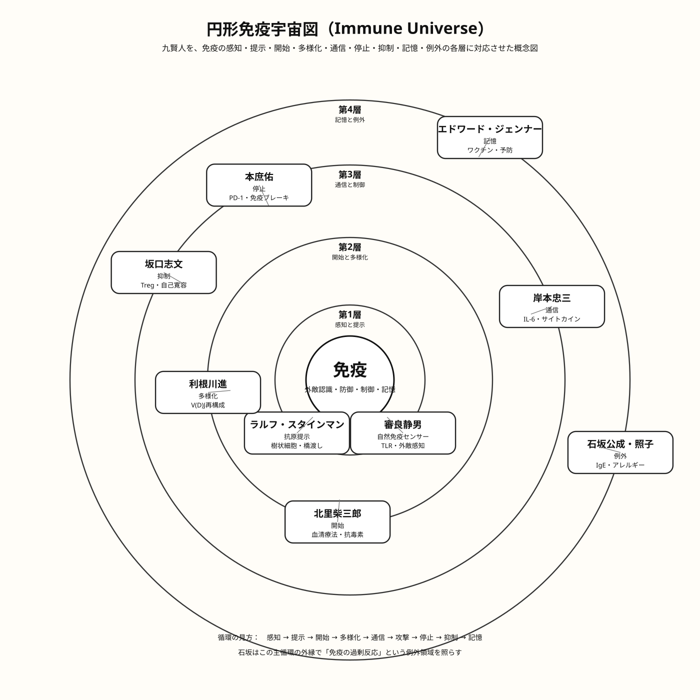
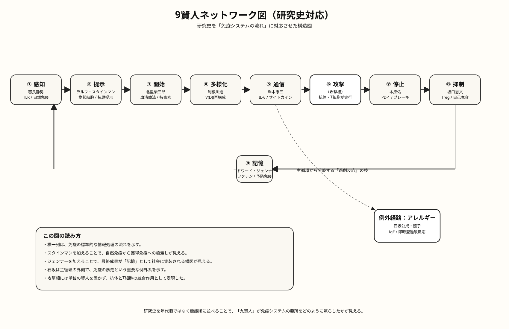

免疫の７賢人
目次（このページ内ジャンプ）
第1章 はじめに（筆者28歳、その時７賢人は）
筆者が28歳の時、大阪大学で初めて生化学という学問に触れた。今でもその時のことを鮮明に思い出す。「生化学」の教科書には「免疫グロブリン」「軽鎖・重鎖」という言葉が並んでいたが、「なぜこの形になったか」は今も完全には理解できていない。その後強く思ったのは、免疫の説明はあまりに難しく、もっと平易に、全体像として伝える方法はないのか、ということである。
本書は、免疫７賢人の発見を「システム」として俯瞰し、免疫という生命の防御機構を物語ふうに描き出せたらと思う。
注：「７賢人」「９賢人」という言葉は筆者の造語である。
第1.5章 抗体構造はどうやって分かったか<<ここをクリック>>
第1.5章 抗体構造はどうやって分かったか<<ここをクリック>>
現在では、抗体（免疫グロブリン）は軽鎖2本と重鎖2本からなるY字型分子であることが常識となっている。しかし、この構造は最初から知られていたわけではない。1960年代までは、抗体がどのような形をしているのかさえ分かっていなかった。
この謎を解いたのは、生化学者のロドニー・ポーターとジェラルド・エーデルマンである。二人は抗体タンパク質を化学的に分解し、その断片を分析することで、抗体の構造を少しずつ明らかにしていった。この研究により、二人は1972年にノーベル生理学医学賞を受賞している。
抗体を「切る」ことで構造が分かった
ポーターは、抗体をパパインという酵素で分解した。すると抗体は三つの断片に分かれた。
- 抗原と結合する部分（Fab）
- もう一つの抗原結合部分（Fab）
- 免疫細胞と結合する部分（Fc）
この結果から、抗体は単純な分子ではなく、役割の異なる部分を持つ分子であることが分かった。
4本の鎖から出来ている
さらにエーデルマンは、抗体を化学的に処理してジスルフィド結合を切断した。すると抗体は四本の鎖に分解された。
- 重鎖（Heavy chain） ×2
- 軽鎖（Light chain） ×2
つまり抗体は
重鎖2本＋軽鎖2本
から構成される分子であることが明らかになった。この結果をもとに、現在よく知られているY字型の抗体構造が提案されたのである。
しかし新しい謎が生まれた
抗体の構造が分かると、次に大きな疑問が生まれた。
人間はどうやって無数の抗体を作るのか
もし抗体ごとに遺伝子が存在するとすれば、人間のDNAには数百万個の遺伝子が必要になる。しかし実際の遺伝子数はそれほど多くない。
この難問を解いたのが、後に登場する利根川進である。利根川は1976年、抗体遺伝子が体内で再構成されることを示し、限られた遺伝子から膨大な抗体多様性が生まれる仕組みを明らかにした。
つまり抗体研究の歴史は
抗体の構造の発見 ↓ 抗体の遺伝子の仕組みの発見
という二段階の革命によって進んだのである。
本書で紹介する免疫七賢人の研究は、まさにこの革命の上に築かれている。
免疫反応の二つの系（自然免疫と獲得免疫）<<ここをクリック>>
免疫反応の二つの系

人体の免疫は大きく自然免疫（Innate Immunity）と獲得免疫（Adaptive Immunity）の二つの系から構成されている。
自然免疫は、病原体が侵入した直後に働く迅速な防御機構であり、マクロファージ、好中球、樹状細胞、NK細胞などが中心となる。これらの細胞は、病原体を直接攻撃したり、炎症反応を引き起こしたりして感染拡大を防ぐ。
一方、獲得免疫は数日かけて成立する精密な免疫反応であり、T細胞とB細胞が中心となる。B細胞は抗体を産生し、T細胞は感染細胞を排除する。
両者は独立して働くのではなく、樹状細胞やサイトカインを介して密接に連携し、迅速さと精密さを兼ね備えた免疫防御システムを形成している。
1973年、７賢人は何をしていたか
北里柴三郎はすでに故人であるが、彼の血清療法の概念はすべての免疫学の前提であった。１９７３年、石坂公成はIgE発見から約10年、世界のトップ研究者として確固たる地位を築いている。利根川進はスイス・バーゼルにて、まさに抗体遺伝子再構成の発見に着手しようとしていた。岸本忠三はIL-6発見への助走期間、審良静男と坂口志文はまだ20代の学生・若手医師であり、本庶佑は米国留学から帰国し免疫グロブリン遺伝子の研究を始めたところであった。
第2章 ７賢人の業績（ノーベル賞受賞者3人）
７人の発見は、現代免疫学のあらゆる基礎となっている。特に利根川進・本庶佑・坂口志文の業績はノーベル賞に輝き、石坂公成（照子夫人と共同）のIgE発見はノーベル賞級の業績として評価されている。ここでは彼らの発見を「免疫システムの流れ」に沿って再配置し、それぞれの役割を示す。




第3章 ７賢人からの「恩恵」
| 賢人 | 発見 | 私たちへの恩恵 |
|---|---|---|
| 北里柴三郎 | 血清療法 | 感染症を「薬で治す」道を開いた。破傷風やジフテリアの治療、さらには新型コロナ治療で用いられた抗体カクテル療法の源流。 |
| 石坂公成・照子 | IgE抗体 | アレルギーの正体が明らかになり、検査や治療薬（抗IgE抗体ゾレアなど）が開発された。花粉症・喘息に苦しむ人々のQOLを劇的に向上。 |
| 利根川進 | 抗体遺伝子再構成 | 抗体医薬産業の基盤。リウマチ・がん・自己免疫疾患に対する分子標的薬やCAR-T療法の原理を支える。 |
| 岸本忠三 | IL-6 | 関節リウマチの特効薬アクテムラ（トシリズマブ）をはじめ、サイトカイン制御による炎症疾患治療が可能になった。 |
| 審良静男 | TLR | ワクチンの効果を高めるアジュバントの開発や、自然免疫を標的とした治療薬の基盤を提供。 |
| 本庶佑 | PD-1 | がん免疫療法オプジーボの開発により、進行がんでも長期生存が可能な患者が増えた。医薬品売上世界トップクラスの市場を創出。 |
| 坂口志文 | Treg | 自己免疫疾患の原因解明と、制御性T細胞を利用した新たな免疫抑制療法の道を拓いた。 |
これらの恩恵は、私たちが普段何気なく受けている医療の多くが、７賢人の発見なくしては存在しなかったことを示している。とりわけ本庶佑博士のPD-1発見は、基礎研究がもたらす経済効果の大きさを象徴する事例であり、特許収入の一部は研究資金として社会に還元されている。
７賢人はそれぞれ「感知」「起動」「多様化」「通信」「ブレーキ」「抑制」という免疫システムの必須コンポーネントを明らかにした。第4章以降では、これらの発見が具体的な病気（花粉症・癌・リウマチ）の理解と治療にどう結びついているかを探る。
第4章 病気と免疫 ─ 花粉症・癌・リウマチ
７賢人の発見は、それぞれ特定の病気の理解に直結している。ここでは代表的な三つの病気（花粉症・癌・関節リウマチ）を取り上げ、免疫システムのどの部分が関与しているかを整理する。
🌸 花粉症（アレルギー性鼻炎）
I型アレルギーIgE肥満細胞
花粉症の核心は石坂夫妻が発見したIgE抗体である。無害な花粉に対してIgEが作られ、肥満細胞（マスト細胞）に結合する。再び花粉が侵入すると、肥満細胞からヒスタミンなどの化学物質が放出され、くしゃみ・鼻水・かゆみが生じる。
免疫７賢人の中では、石坂(原因)・利根川(多様性)・岸本(炎症)・坂口(抑制不全)が関与する複合的な現象である。近年は抗IgE抗体（ゾレア）により重症例の治療が可能になっている。
🦠 癌（悪性腫瘍）
免疫監視PD-1/PD-L1Treg
私たちの体内では毎日数千個のがん細胞が発生しているが、通常は免疫が排除する（免疫監視機構）。しかしがん細胞は様々な方法で免疫から逃れる。特に本庶佑が発見したPD-1経路は、がん細胞がT細胞のブレーキをかける主要な仕組みである。抗PD-1抗体（オプジーボなど）はこのブレーキを解除し、免疫が再びがんを攻撃できるようにする。
また坂口志文のTregは、がんが利用して免疫を抑制する場合があり、Tregを標的とした治療も研究されている。
🦴 関節リウマチ
自己免疫IL-6TNF
関節リウマチは、免疫が自分の関節を攻撃してしまう自己免疫疾患である。岸本忠三が発見したIL-6は炎症の中心的なメディエーターであり、関節リウマチの病態に深く関わる。抗IL-6受容体抗体（アクテムラ）は、このシグナルを遮断することで劇的な症状改善をもたらす。
また坂口志文のTregは、本来なら自己免疫を抑えるはずの細胞であるが、その機能不全がリウマチの発症に関与すると考えられている。
このように、７賢人の発見は各疾患の「原因」や「治療標的」を明らかにし、直接的な医療貢献を果たしている。特に本庶・岸本・石坂の発見は、それぞれの疾患に対する世界初の革新的治療薬を生み出した。

第5章 免疫学の経済 ─ ７賢人が生んだ数兆円市場
７賢人の基礎研究は、単に学術的な貢献にとどまらず、巨大な医薬品市場を創出した。特に本庶佑博士のPD-1発見は、免疫チェックポイント阻害薬という新たな治療領域を開拓し、世界売上トップの医薬品（キイトルーダ）を生む原動力となった。
| 賢人 | 発見 | 代表的な医薬品 | 市場規模（概算・年間） |
|---|---|---|---|
| 北里柴三郎 | 血清療法 | 抗毒素血清（歴史的） | 現代抗体医薬の源流 |
| 石坂公成 | IgE抗体 | ゾレア（抗IgE抗体） | 約40億ドル（喘息・蕁麻疹） |
| 利根川進 | 抗体遺伝子再構成 | 抗体医薬全般 / CAR-T | 抗体医薬市場全体で約10兆円 |
| 岸本忠三 | IL-6 | アクテムラ（トシリズマブ） | 約40億ドル（リウマチ・重症COVID） |
| 審良静男 | TLR | ワクチンアジュバント | 広範なワクチン市場に寄与 |
| 本庶佑 | PD-1 | オプジーボ / キイトルーダ | 約5兆円（PD-1市場全体） |
| 坂口志文 | 制御性T細胞 | （開発中の治療薬多数） | 将来性極めて高い |
特に注目すべきは本庶佑博士のケースである。オプジーボの世界売上は年間約1兆円規模に達し、その特許ロイヤルティの一部は発明者である本庶博士に還元される。大学の給与とは別に、特収入は年間数十億円とも推定され、これは基礎研究がもたらす経済的インパクトの象徴である。
🔍 免疫７賢人の経済効果は、単なる「医薬品売上」ではない。彼らの発見がなければ、リウマチで車椅子の人々、アレルギーに苦しむ子供たち、進行がんで死を待つだけだった患者たちの命やQOLは大きく異なっていた。経済価値と同時に「生きる希望」という計り知れない価値が生まれている。
第6章 七賢人の免疫ネットワーク
これまで個別に見てきた七賢人の発見は、実は一つの流れ（ネットワーク）として再配置できる。免疫システムは「感知」から始まり、「開始」「多様化」「通信」「攻撃」「停止」「抑制」そして「例外」としてのアレルギーが存在する。この循環構造こそが、７賢人が描き出した免疫の全体像である。
（審良） → ① 開始
（北里） → ② 多様化
（利根川） → ③ 通信
（岸本） → ④ 攻撃 → ⑤ 停止
（本庶） → ⑥ 抑制
（坂口） → ⑦ 記憶
ここで重要なのは、攻撃（④）や記憶（⑦）に対応する名前がないことである。つまり、７賢人の発見は免疫システムの「要所」を押さえているが、システム全体を完全にカバーしているわけではない。たとえば攻撃を担うキラーT細胞や抗体そのもの、記憶を担うメモリー細胞の基礎を解明した科学者は別に存在する。
しかしそれでも、７賢人の発見が「感知・開始・多様化・通信・停止・抑制・例外」という免疫の制御システムの核を構成していることは疑いない。この視点こそが、免疫を「臓器」ではなく「システム」として理解するための鍵である。
ネットワークが示すもの
七賢人の研究を時系列ではなく「機能」で並べ替えると、免疫が入力（感知）→情報処理（多様化・通信）→出力（攻撃）→フィードバック（停止・抑制）→記憶という情報システムそのものであることが分かる。この構造は現代の人工知能（AI）の設計思想とも酷似しており、生命が長い進化の果てに獲得した「完全な制御システム」の原形を示している。
次章では、このネットワークをさらに拡張し、「9賢人」として捉え直すことで、免疫システムのより完全な理解を目指す。
第7章 9賢人の免疫ネットワーク
前章で見たように、７賢人の発見だけでは免疫システムの「攻撃」と「記憶」の部分がカバーされていない。そこで、この二つの機能を解明した科学者を加え、「9賢人」として再定義することで、免疫システムのより完全な全体像を描くことができる。
新たに加わる二人の巨人は、ラルフ・スタインマン（樹状細胞・抗原提示）とエドワード・ジェンナー（ワクチン・免疫記憶）である。スタインマンは2011年ノーベル賞受賞者であり、ジェンナーは18世紀の医師ながら、その発見は現代免疫学の基盤となっている。
９賢人一覧（機能順）

９賢人が描く完全な免疫ネットワーク
スタインマン → ① 感知
審良 → ② 開始
北里 → ③ 多様化
利根川 → ④ 通信
岸本 → ⑤ 攻撃 → ⑥ 停止
本庶 → ⑦ 抑制
坂口 → ⑧ 記憶
ジェンナー → ⑨ その他
石坂
この図が示すように、九賢人を配置することで、免疫システムは「抗原提示」から始まり「記憶」で完結する一つの循環構造として理解できる。攻撃フェーズ（⑤）に対応する賢人がいないのは、攻撃そのもの（キラーT細胞や抗体の作用）が複数の細胞・分子によって担われており、単一の発見に帰着できないためである。
第8章 7賢人と9賢人の免疫ネットワークの違い
| 観点 | 七賢人のネットワーク | 九賢人のネットワーク |
|---|---|---|
| カバー範囲 | 感知・開始・多様化・通信・停止・抑制・例外 | 抗原提示＋感知＋開始＋多様化＋通信＋停止＋抑制＋記憶＋例外 |
| 欠落している機能 | 抗原提示、攻撃そのもの、免疫記憶 | 攻撃そのもの（ただし攻撃は複合機能なので不可避） |
| システムの完全性 | 制御系はほぼ網羅するが、入力（抗原提示）と出力（記憶）が不足 | 入力（抗原提示）から出力（記憶）まで一貫した流れとして理解可能 |
| 治療との対応 | 免疫チェックポイント、サイトカイン阻害など制御系治療が中心 | ワクチン（記憶）、樹状細胞ワクチン（抗原提示）なども含む包括的な治療戦略が見える |
| 歴史的意義 | 20世紀後半の日本人研究者による免疫制御の発見を象徴 | 免疫学の全歴史（18世紀のジェンナーから21世紀のスタインマンまで）を統合 |
７賢人の枠組みは、免疫の「制御システム」として非常に優れている。しかし免疫を「情報システム」として完全に理解するには、入力（抗原提示）と出力（記憶）の概念が不可欠である。九賢人はこの不足を補い、免疫を「外界の情報を感知し、内部で処理し、攻撃し、記憶する」という一貫した情報処理システムとして描くことを可能にする。
特にスタインマンの樹状細胞は、自然免疫と獲得免疫を繋ぐ「情報の翻訳者」であり、ジェンナーのワクチンは免疫システムの「学習能力」を利用した人類最初の工学的応用である。この二人を加えることで、七賢人のネットワークはより豊かで実用的な全体像へと昇華する。
第9章 次の課題：腸内細菌と免疫
九賢人のネットワークによって免疫システムの全体像はほぼ描けた。しかし現代免疫学には、さらに深遠なテーマが残されている。それが「腸内細菌と免疫の関係」である。
腸管免疫ネットワーク（人体最大の免疫器官）<<ここをクリック>>
腸管免疫ネットワーク

腸は人体最大の免疫器官であり、体内の免疫細胞の多くがここに存在している。
腸管では外界から侵入する微生物と腸内に常在する細菌が共存しているため、免疫は単純に敵を排除するだけではなく、共生関係を維持する調整機構として働いている。
腸上皮細胞、樹状細胞、マクロファージなどが微生物の情報を感知し、サイトカインを介してT細胞の分化を制御する。
特に重要なのが
- Th17細胞（炎症反応）
- 制御性T細胞（Treg）
であり、この二つのバランスが腸内免疫の安定を保っている。
さらに腸内細菌が産生する短鎖脂肪酸などの代謝物は免疫細胞の機能に影響を与え、免疫システムの調節に深く関わっていることが分かってきている。
このように腸管免疫は、
防御・炎症・共生
という三つの機能を同時に調整する複雑な免疫ネットワークである。
私たちの腸内には1000種類以上、100兆個にも及ぶ細菌が生息している。これらの細菌は単なる「住人」ではなく、免疫システムの成熟や恒常性維持に深く関与している。例えば：
- 制御性T細胞（Treg）の誘導：特定の腸内細菌（クロストリジウム属など）は、大腸においてTregを誘導し、炎症を抑える働きを持つ。
- Th17細胞の分化：腸管関連リンパ組織では、細菌の存在がTh17細胞の分化を促進し、粘膜防御に寄与する。
- 自然リンパ球（ILC）の活性化：腸内細菌の代謝産物は、自然リンパ球を介して腸管の恒常性を維持する。
- アレルギー・自己免疫との関連：衛生仮説が示すように、幼少期の細菌 exposure がその後のアレルギー発症リスクに影響する。
この分野はまだ発展途上であり、７賢人・９賢人に続く「第三世代」の免疫学者たちが解明を進めている。特に日本人研究者では、本田賢也（腸内細菌による免疫制御機構の解明）や服部正平（腸内細菌ゲノム解析）らの活躍が目覚ましい。
腸内細菌は、免疫システムにとって「自己」でも「非自己」でもない、共生するパートナーである。この視点は、七賢人が築いた「自己・非自己の区別」という枠組みをさらに拡張するものであり、21世紀免疫学の最大のフロンティアと言える。
腸内細菌研究がもたらす未来
腸内細菌を操作することで、アレルギー、自己免疫疾患、さらにはがん免疫療法の効果を高める可能性が示唆されている。すでに「酪酸菌」や「ビフィズス菌」を用いたプロバイオティクス、あるいは便移植（FMT）が一部の疾患で臨床応用され始めている。近い将来、「免疫の賢人」に腸内細菌研究者が加わる日が来るかもしれない。
🧬 本田賢也（免疫学者・微生物学者）
🧪 服部正平（ゲノム科学者・微生物学者）
第10章 関西に集中する賢人たち
７賢人のうち、実に5人（北里・岸本・審良・本庶・坂口）が関西の大学（主に大阪大学・京都大学）で研究を行っていた。石坂も初期は大阪大学に在籍し、利根川は京都大学出身である。つまり、七賢人は全員が関西にゆかりのある研究者なのである。
この事実は偶然では片付けられない。戦後日本の免疫学は、大阪大学の微生物病研究所や京都大学のウイルス研究所を中心に発展し、独創的な研究者を次々と輩出してきた。そこには「基礎研究を大切にする風土」「自由な発想を許す雰囲気」「競争と協奏のバランス」があったと考えられる。
大阪・京都・神戸
免疫学の聖地
関西免疫学クロニクル
このように、関西は100年以上にわたり免疫学の中心地であり続けた。現在も大阪大学免疫学フロンティア研究センター（IFReC）をはじめ、世界トップレベルの研究拠点が集積している。関西という地域の「ほどよい競争と協調」の文化が、ノーベル賞級の発見を生み出したと言っても過言ではない。
第11章 まとめ
７賢人、そして９賢人の発見を一つの流れとして俯瞰すると、免疫システムが実に巧みに設計された「自己調整型の情報ネットワーク」であることが分かる。最後に、本書の内容を簡潔に振り返っておく。
❶ はじめに：28歳の出会いと疑問。免疫学は難解だが、システムとして捉えれば見えてくる。
❷ ７賢人の業績：北里・石坂・利根川・岸本・審良・本庶・坂口。それぞれが免疫の核となる機能を解明した。
❸ ７賢人からの恩恵：抗体医薬、免疫チェックポイント阻害薬、抗サイトカイン療法など、現代医療の根幹を支える。
❹ 病気と免疫：花粉症(IgE)、癌(PD-1)、リウマチ(IL-6)──それぞれの疾患は免疫システムの特定部位の破綻である。
❺ 免疫学の経済：７賢人の発見が生んだ医薬品市場は総額10兆円規模。特にPD-1阻害薬は世界トップの売上を誇る。
❻ ７賢人の免疫ネットワーク：感知→開始→多様化→通信→停止→抑制→例外。制御システムとしての免疫が見えてくる。
❼ ９賢人の免疫ネットワーク：スタインマン(抗原提示)とジェンナー(記憶)を加えることで、完全な情報処理システムとして描ける。
❽ ７賢人と９賢人の違い：７賢人は「制御」に優れ、九賢人は「情報の流れ」を可視化する。
❾ 次の課題：腸内細菌と免疫：共生細菌と免疫の対話は、新たな免疫制御の扉を開きつつある。
❿ 関西に集中する賢人たち：京都・大阪という地が生んだ奇跡。基礎研究の風土が世界をリードした。
免疫システムの全体像 ─ 九賢人による「完全版」


免疫システムは、私たちの体内で24時間休みなく働き続ける見えない防御網である。本書で紹介した７賢人・９賢人の発見は、その網の目の「結節点」を明らかにしたものだ。しかし、本当に驚くべきことは、これらの発見がいずれも「日本の関西」という小さな地域から生まれたという事実である。
筆者が28歳の時に初めて免疫学に触れ、軽鎖・重鎖という言葉に戸惑ったあの日から、実に多くの時間が経った。当時は想像もしなかったが、あの教科書に登場する日本人の名前たちが、実際に同じ関西の地で研究をしていたのだ。そして彼らの発見は、今や世界中の患者の命を救い、数兆円の市場を創り出している。
おわりに ─ 次の10年へ
免疫学は決して終わらない。腸内細菌、メタボローム、そして１細胞解析。新しい技術が新たな謎を生み出す。本書が、読者にとって複雑な免疫を「システム」として捉える一助となれば幸いである。